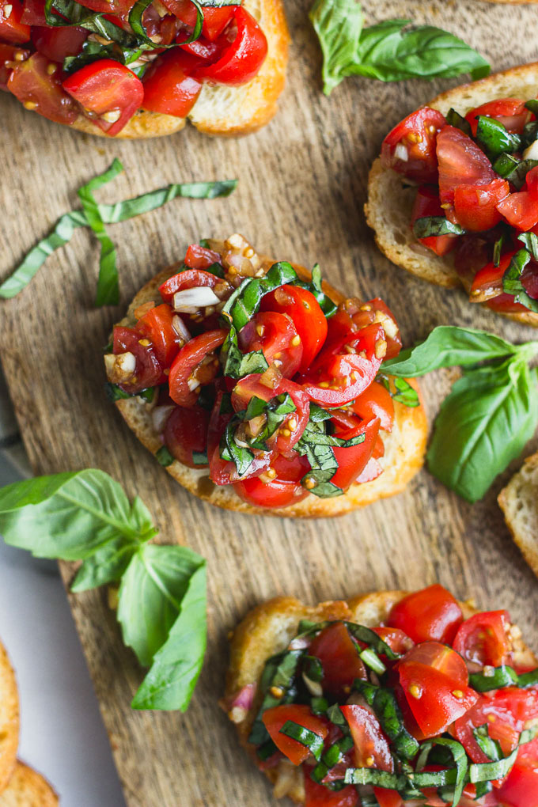

Balsamic Bruschetta

Description
This recipe shows you how to make Balsamic Bruschetta. This Italian appetizer is simple enough to make at home for your family or for guests. With toasted bread topped with Parmesan cheese, basil and garlic, this dish will explode with flavors that will dance on your taste buds.
Ingredients
1 loaf French Bread, Cut into 1/4 inch slices
1 tablespoon extra-virgin olive oil
8 roma (plum) tomatoes, diced
1/3 cup chopped fresh basil
1 ounce Parmesan cheese, freshly grated
2 cloves garlic, minced
1 tablespoon good quality balsamic vinegar
2 teaspoons extra-virgin olive oil
1/4 teaspoon kosher salt
1/4 teaspoon freshly ground black pepper
Steps
- Preheat oven to 400 degrees F. Brush bread slices on both sides lightly with 1 tablespooon oil and place on large baking sheet. Toast bread until golden, 5 to 10 minutes, turning halfway through.
- Meanwhile, toss together tomatoes, basil, Parmesan cheese, and garlic in a bowl. Mix in balsamic vinegar, 2 teaspoons olive oil, kosher salt, and pepper.
- Spoon tomato mixture onto toasted bread slices and serve immediately.